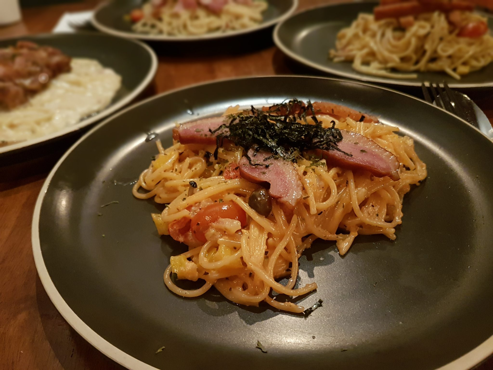
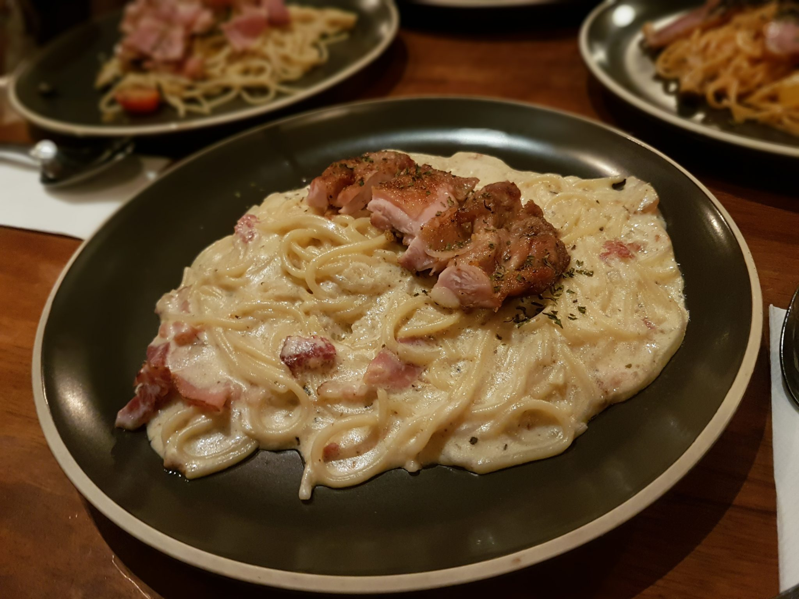

PIKNIK Cafe is one of the pioneers in Penang’s cafe or brunch spot back in year 2011 before cafes mushrooming in Penang. PIK NIK hungry to prove themselves as the best lepak place in George Town that time and they still do until today, we believe. PIKNIK leaves us a very good impression during our visit, the cafe is patronized by hipsters, youngsters and college/university students. They play card, spy game, board game, chilling like a happy child in the cafe. We can literally felt the happiness and gleeful in the cafe!
 KOREAN CHICKEN BURGER - RM22.50, we ordered the Korean Chicken Burger, it tasted pretty good and the sauce was amazing. It’s kind of sweet and a little bit of spiciness, it has got the kick!. However, the cheese wasn’t convincing enough to my taste-buds, I can’t taste it literally.  SATAY CHICKEN – RM 14.50, comes with double waffles with grilled homemade satay chicken patty, cheese, vegetables, onion and drizzled with superb sauce. We were amazed by oh-my-goodness patty, it was juicy and tasty. You should really try it!
If you need a cozy place to chillax with your friends in the city, you’ll be in good company. As highlighted above, PIKNIK Cafe is the best lepak place in George Town, it does prove it! The coffee & waffle here served great and the price here is pretty affordable or rather cheaper as compared to other cafes. You should really pay a visit or re-visiting them! #GoodFriendsNeverBoJio